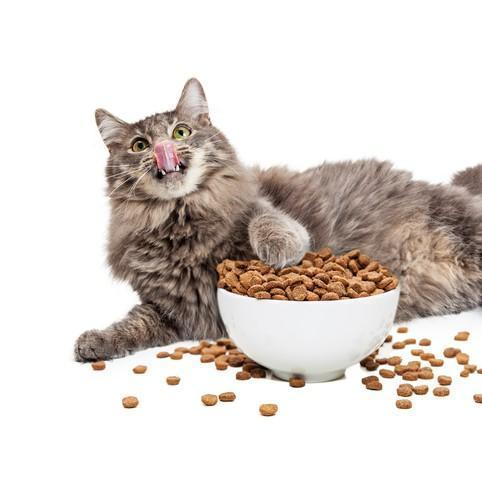
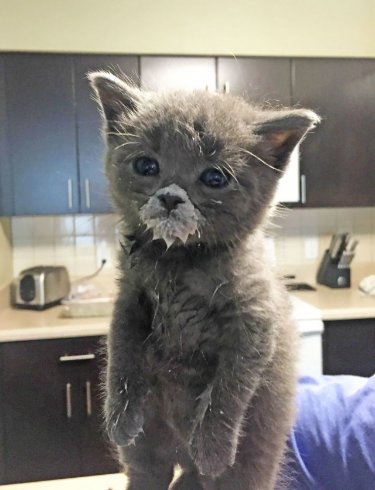
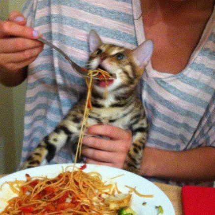
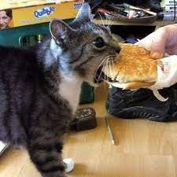
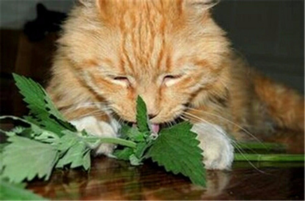
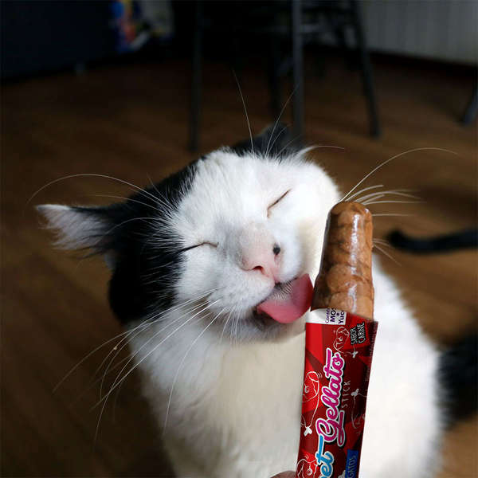
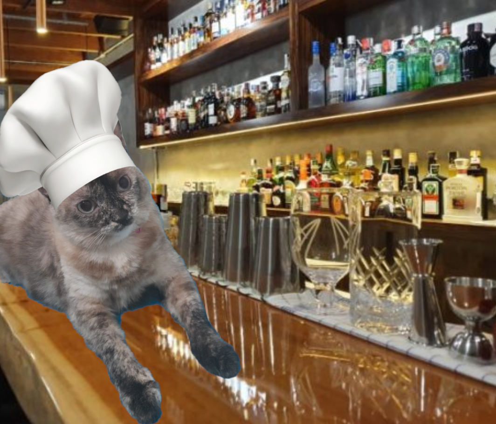

Prato comum, mas delicioso. Se der uma reboladinha para o garçom durante a Happy Hour, ganha mais uma porção de ração.
Preço de R$20,00
Uma bacia de leite, temperado e fresco. A entrada favorita dos nossos clientes.
Preço de R$9,99
Uma prato de macarrão, uma das especialidades da nossa cozinha. Nosso macarrão é reconhecido mundialmente.
Preço de R$34,99
Nosso hambúrguer artesanal. Com 180g de Angus Beef, uma fatia de queijo prato e uma farofa de bacon deliciosa, esse prato é altamente recomendado pela nossa cozinha. Acompanha fritas e molho da casa (entregue separadamente).
Preço de R$42,00
Um prato especial da Happy Hour, traz um efeito relaxante e acalma os clientes.
Preço de R$7,99
Nossa sobremesa principal, é um dos carros-chefe da casa. Um picolé delicioso sabor sachê, adorado por nossos clientes.
Preço de R$13,99
Com apenas 6 anos já era dona de seu próprio negócio, o barto (bar gato). Hoje com 9 anos é a chefe da cozinha do Bar Beber Cair e Levantar. Depois de meio ano de cursos no instagram, ela é uma das chefs mais famosas do mundo inteiro. Do Grajaú até a Barra, Catarina já cozinhou por todo o Rio de Janeiro, além de suas palestrar mundo afora. Adora carinho perto do rabo e dormir.
